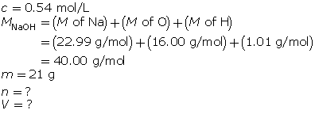
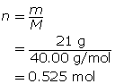
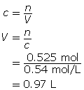
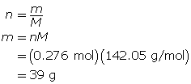
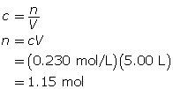
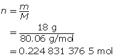

Module 4—Properties of Solutions
 Read
Read
Formulas are often required to be manipulated in order to solve for a desired quantity. The following diagrams show how the two formulas used in these examples can be manipulated.

Use the manipulated formulas as you work through “SAMPLE problem 5.1” and “COMMUNICATION examples” 10 and 11 on pages 209 and 210 of your textbook and Example 3 below.
Example 3: What volume is required to make a 0.54-mol/L solution with 21 g of sodium hydroxide?
The mass of NaOH is given. Convert the mass to number of moles, and then determine the volume.

First, determine the number of moles of solute.

Now, calculate the volume.

The volume of sodium hydroxide required is 0.97 L.
 Self-Check
Self-Check
SC 4. What mass of sodium sulfate is present in 1.20 L of a 0.23-mol/L solution?
SC 5. What mass of magnesium phosphate is present in 5.00 L of a 230-mmol/L solution?
SC 6. What volume of solution is required to make a 0.86-mol/L solution with 18 g of ammonium nitrate?
SC 7. What volume of solution is required to make a 0.55-mol/L solution with 0.29 kg of sodium hydroxide?
Self-Check Answers
SC 4.

First, determine the number of moles of sodium sulfate.

Now, calculate the mass of sodium sulfate.

39 g of sodium sulfate is present.
SC 5.

First, determine the number of moles of magnesium phosphate.

Now, calculate the mass of magnesium phosphate.

302 g of magnesium phosphate is present.
SC 6.

First, determine the number of moles of solute.

Now, calculate the volume.

0.26 L of solution is required.
SC 7.

First, determine the number of moles of solute.

Now, calculate the volume.

13 L of solution is required.